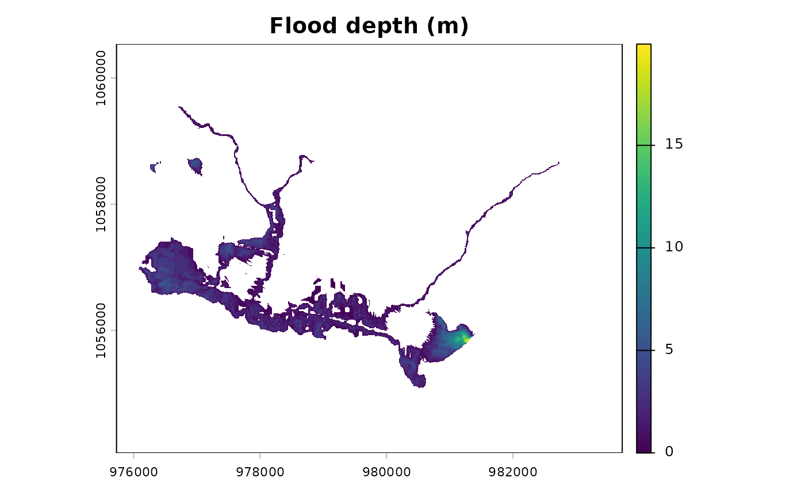

Interpolate flood surface and compute depth above terrain
Source:R/fl_flood_depth.R
fl_flood_depth.RdTakes the flood surface elevation at stream cells (from
fl_flood_surface()) and interpolates it outward to produce a continuous
water surface, then subtracts the DEM to get flood depth. Positive values
indicate flooding.
Arguments
- dem
A
SpatRasterof elevation.- flood_surface
A
SpatRasterof flood surface elevation at stream cells (output offl_flood_surface()).NAat non-stream cells.- max_width
Numeric. Maximum corridor width in map units (metres) within which to interpolate. Default
2000(1000m each side).- streams
A
SpatRasterof rasterized streams used to define the interpolation corridor. IfNULL, derived from non-NAcells inflood_surface.
Value
A SpatRaster of flood depth (metres above terrain). Positive
values are flooded; 0 at stream cells; NA outside the corridor or
where depth is negative (terrain above flood surface).
Details
Interpolation uses terra::interpIDW() (inverse distance weighting) to
propagate the flood surface from stream cells outward. This differs from
the Python VCA which uses scipy.interpolate.griddata with linear
interpolation — IDW is available natively in terra and produces similar
results for this application.
The interpolation domain is limited to cells within max_width / 2 of
the nearest stream cell to avoid extrapolating into distant terrain.
Examples
dem <- terra::rast(system.file("testdata/dem.tif", package = "flooded"))
streams <- sf::st_read(
system.file("testdata/streams.gpkg", package = "flooded"),
quiet = TRUE
)
stream_r <- fl_stream_rasterize(streams, dem, field = "upstream_area_ha")
precip_r <- fl_stream_rasterize(streams, dem, field = "map_upstream")
surface <- fl_flood_surface(dem, stream_r, precip = precip_r)
depth <- fl_flood_depth(dem, surface, max_width = 2000, streams = stream_r)
terra::plot(depth, main = "Flood depth (m)")
